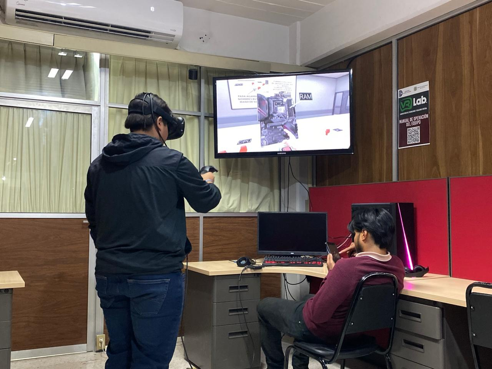

| Practica | Descripcion |
|---|---|
| Identificar los componentes internos de una computadora y comprender el proceso correcto de desmontaje, cuidando la integridad de cada parte y respetando el procedimiento técnico adecuado. |
|
| Aprender y aplicar el procedimiento correcto para desmontar un procesador y realizarle mantenimiento, incluyendo la limpieza del disipador y la aplicación de nueva pasta térmica. |
|
| Desensamblar una computadora de manera segura para extraer, limpiar y volver a instalar los módulos de memoria RAM, y así verificar su correcto funcionamiento. |
|
| Realizar el desmontaje completo de una computadora para aplicar mantenimiento preventivo a todos sus componentes, asegurando su buen funcionamiento, limpieza y prolongando su vida útil. |
|
|  | Aprender e identificar los componentes internos de una computadora personal, así como comprender el proceso de ensamblaje utilizando una simulación en un entorno de realidad virtual. |